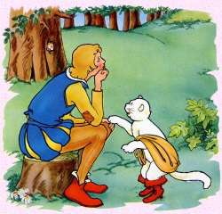
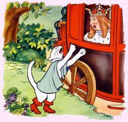
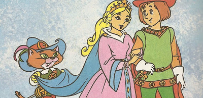

Erase una vez un viejo molinero que tenía tres hijos. Acercándose la hora de su muerte hizo llamar a sus tres hijos. "Mirad, quiero repartiros lo poco que tengo antes de morirme". Al mayor le dejó el molino, al mediano le dejó el burro y al más pequeñito le dejó lo último que le quedaba, el gato. Dicho esto, el padre murió. Mientras los dos hermanos mayores se dedicaron a explotar su herencia, el más pequeño cogió unas de las botas que tenía su padre, se las puso al gato y ambos se fueron a recorrer el mundo. En el camino se sentaron a descansar bajo la sombra de un árbol. Mientras el amo dormía, el gato le quitó una de las bolsas que tenía el amo, la llenó de hierba y dejó la bolsa abierta. En ese momento se acercó un conejo impresionado por el color verde de esa hierba y se metió dentro de la bolsa. El gato tiró de la cuerda que le rodeaba y el conejo quedó atrapado en la bolsa. Se hecho la bolsa a cuestas y se dirigió hacia palacio para entregársela al rey. Vengo de parte de mi amo, el marqués Carrabás, que le manda este obsequio. El rey muy agradecido aceptó la ofrenda.
Pasaron los días y el gato seguía mandándole regalos al rey de parte de su amo. Un día, el rey decidió hacer una fiesta en palacio y el gato con botas se enteró de ella y pronto se le ocurrió una idea. "¡Amo, Amo! Sé cómo podemos mejorar nuestras vidas. Tú solo sigue mis instrucciones." El amo no entendía muy bien lo que el gato le pedía, pero no tenía nada que perder, así que aceptó. "¡Rápido, Amo! Quítese la ropa y métase en el río." Se acercaban carruajes reales, era el rey y su hija. En el momento que se acercaban el gato chilló: "¡Socorro! ¡Socorro! ¡El marqués Carrabás se ahoga! ¡Ayuda!". El rey atraído por los chillidos del gato se acercó a ver lo que pasaba. La princesa se quedó asombrada de la belleza del marqués. Se vistió el marqués y se subió a la carroza. El gato con botas, adelantándose siempre a las cosas, corrió a los campos del pueblo y pidió a los del pueblo que dijeran al rey que las campos eran del marqués y así ocurrió. Lo único que le falta a mi amo -dijo el gato- es un castillo, así que se acordó del castillo del ogro y decidió acercarse a hablar con él. "¡Señor Ogro!, me he enterado de los poderes que usted tiene, pero yo no me lo creo así que he venido a ver si es verdad."
El ogro enfurecido de la incredulidad del gato, cogió aire y ¡zás! se convirtió en un feroz león. "Muy bien, -dijo el gato- pero eso era fácil, porque tú eres un ogro, casi tan grande como un león. Pero, ¿a que no puedes convertirte en algo pequeño? En una mosca, no, mejor en un ratón, ¿puedes? El ogro sopló y se convirtió en un pequeño ratón y antes de que se diera cuenta ¡zás! el gato se abalanzó sobre él y se lo comió. En ese instante sintió pasar las carrozas y salió a la puerta chillando: "¡Amo, Amo! Vamos, entrad." El rey quedó maravillado de todas las posesiones del marqués y le propuso que se casara con su hija y compartieran reinos. Él aceptó y desde entonces tanto el gato como el marqués vivieron felices y comieron perdices.
